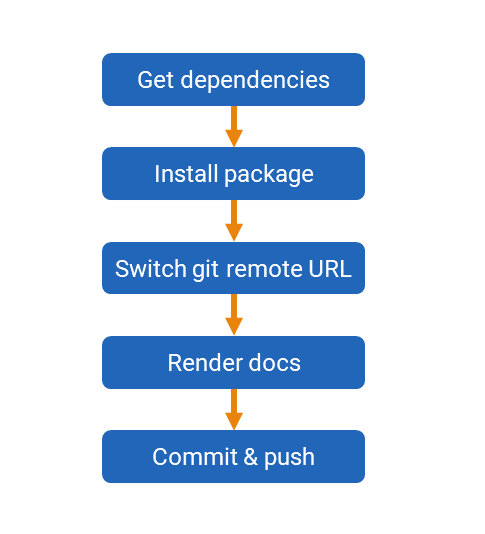

In this post, I describe the latest iteration of my automatic document production with R. It improves upon the methods used in Rtraining, and previous work on this topic can read by going to the auto deploying R documentation tag.
I keep banging on about this area because reproducible research / analytical document pipelines is an area I’ve a keen interest in. I see it as a core part of DataOps as it’s vital for helping us ensure our models and analysis are correct in data science and boosting our productivity.
Even after (or because of) a few years of off and on again development to the process, Rtraining had a number of issues:
build time was long because all presentations and their respective dependencies were required
if a single presentation broke, any later presentations would not get generated
the presentation build step was in “after_success” so didn’t trigger notifications
the build script for the presentations did a lot of stuff I thought could be removed
This post covers how I’m attempting to fix all bar the last problem (more on that in a later post).
With the problems outlined, let’s look at my new base solution and how it addresses these issues.
Structure
I have built a template that can be used to generate multiple presentations and publish them to a docs/ directory for online hosting by GitHub. I can now use this template to produce category repositories, based on the folders in inst/slides/ in Rtraining. I can always split them out further at a later date.
The new repo is structured like so:
Package infrastructure
DESCRIPTION – used for managing dependencies primarily
pres/ – directory for storing presentation .Rmd files
pres/_output.yml – file with render preferences
Output directory
docs/ – directory for putting generated slides in
Document generation infrastructure
.travis.yml – used to generate documents every time we push a commit
buildpres.sh – shell script doing the git workflow and calling R
buildpres.R – R script that performs the render step
Presentations
My Rtraining repo contained all presentations in the inst/slidedecks/ directory with further categories. This meant that if someone installed Rtraining, they’d get all the decks. I think this is a sub-optimal experience for people, especially because it mean installing so many packages, and I’ll be focusing instead on improving the web delivery.
Render requirements are now stored in an _output.yml file instead of being hard coded into the render step so that I can add more variant later
I’m currently using a modified version of the revealjs package as I’ve built a heavily customised theme. As I’m not planning on any of these presentation packages ever going on CRAN, I can use the Remotes field in DESCRIPTION to describe the location. This simplifies the code significantly.
Document generation
Automatic document generation with R
Travis
I use travis-ci to perform the presentation builds. The instructions I provide travis are:
One important thing to note here is that I used some arguments on my package build and check steps along with latex: false to drastically reduce the build time as I have no intention of producing PDFs normally.
The install section is the prep work, and then the script section does the important bit. Now if there are errors, I’ll get notified!
Bash
The script that gets executed in my Travis build:
changes over to a GITHUB_PAT based connection to the repo to facilitate pushing changes and does some other config
executes the R render step
puts the R execution log in docs/ for debugging
commits all the changes using the important prefix [CI SKIP] so we don’t get infinite build loops
The R step is now very minimal in that it works out what presentations to generate, then loops through them and builds each one according to the options specified in _output.yml
This work has substantially mitigated most of the issues I had with my previous Rtraining workflow. I now have to get all my slide decks building under this new process.
I will be writing about making an improved presentation portal and how to build and maintain your own substantially modified revealjs theme at a later date.
The modified workflow and scripts also have implications on my pRojects package that I’m currently developing along with Jon Calder. I’d be very interested to hear from you if you have thoughts on how to make things more streamlined.